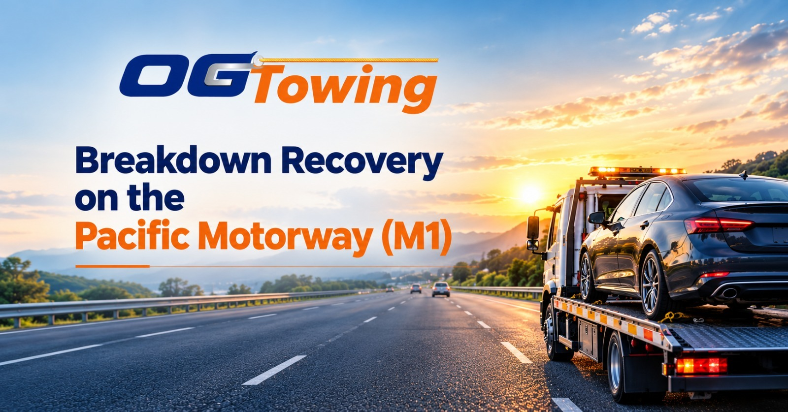

Breaking down on the Pacific Motorway (M1) can be stressful, especially when you are travelling between Brisbane, Logan, and the Gold Coast. A flat tyre, engine failure, overheating, or vehicle accident can leave you stranded on a busy road where safety and quick assistance are essential.
If you need breakdown recovery on the Pacific Motorway (M1), understanding what to do, how to arrange a tow truck, and what information to provide can help you manage the situation more confidently.
OG Towing provides 24/7 towing and emergency recovery services across Brisbane, Capalaba, Redlands, and surrounding areas, including assistance along major motorways. Visit OG Towing to learn more about its towing services.
Why Breakdown Recovery on the M1 Requires Quick Action
The Pacific Motorway connects Brisbane with Logan and the Gold Coast. It carries substantial commuter and freight traffic, so a disabled vehicle can create a dangerous situation for its occupants and other motorists.
Common reasons drivers need M1 breakdown towing in Brisbane include:
- Engine overheating or mechanical failure
- Flat tyres or damaged wheels
- Battery failure or a vehicle that will not start
- Fuel-related problems
- Accident damage that makes the vehicle unsafe to drive
- Transmission problems or sudden loss of power
If your vehicle begins showing warning signs, leave the motorway at the next safe exit if possible. If you cannot exit, move onto the shoulder as far from traffic as you safely can.
Turn on your hazard lights and assess your surroundings. If it is safe to leave the vehicle, exit from the passenger side and move behind a safety barrier or away from traffic. If exiting would be dangerous, remain inside with your seatbelt fastened and call for assistance. Never attempt roadside repairs beside fast-moving traffic.
For official advice, read the Queensland Government's breakdown safety guide for motorways and freeways.
When Should You Call a Tow Truck on the Pacific Motorway?
Not every vehicle problem requires towing, but driving a damaged or unsafe car can make the situation worse.
Consider arranging emergency towing on the M1 if:
- Your engine has overheated and the vehicle cannot safely continue.
- Your car has been involved in a collision.
- A tyre or wheel has suffered serious damage.
- Your vehicle has lost power or stopped in an unsafe location.
- Warning lights indicate a potentially serious mechanical problem.
- Your vehicle cannot be moved safely to a repairer.
OG Towing offers emergency towing services for motorists who need assistance with breakdowns and vehicle recovery across Brisbane and surrounding areas.
When you call, explain whether your vehicle is on the shoulder, at an exit, in a breakdown bay, or at another safe location. The tow operator can use this information to assess access requirements and determine the appropriate recovery method.
How to Arrange M1 Breakdown Recovery with OG Towing
Getting the right information ready can help streamline your towing request.
Step 1: Move to a Safer Location
If possible, exit the motorway or move your vehicle away from live traffic. Turn on your hazard lights and keep yourself and your passengers safe.
If the vehicle is obstructing traffic or creating an immediate hazard, contact the appropriate emergency or traffic-management service.
Step 2: Share Your Exact Location
When requesting a tow truck on the M1, provide as much location information as possible, including:
- Your direction of travel: northbound or southbound
- The nearest exit, interchange, or landmark
- Your GPS location, if available
- Your vehicle's make, model, and colour
- The nature of the breakdown or accident
Accurate location details help the towing operator identify where assistance is needed and whether special access arrangements may be necessary.
Step 3: Explain Your Vehicle's Condition
Tell the operator whether your car starts, rolls, steers, or has damaged wheels. Mention any lowered suspension, accident damage, or other factors that may affect loading.
This helps determine whether a standard tow truck or specialised recovery equipment is required.
Step 4: Confirm the Destination and Price
Tell the operator whether you want the vehicle taken to a mechanic, your home, a storage facility, or another suitable destination.
Before confirming, ask about the estimated towing cost, travel distance, after-hours charges, and any additional recovery fees. The final price can depend on the vehicle, pickup location, distance, and complexity of the job.
For assistance, contact OG Towing on 0430 917 742. Its website advertises 24/7 towing services across Brisbane and surrounding areas.
What Affects the Cost of M1 Breakdown Towing?
The cost of breakdown recovery on the Pacific Motorway varies depending on the circumstances. There is no single price that applies to every recovery.
Important factors include:
Distance: A short tow to a nearby mechanic may cost less than transporting your vehicle from the M1 to a destination across Brisbane or the Gold Coast.
Vehicle type: SUVs, vans, modified vehicles, and heavier vehicles may require different equipment or handling.
Recovery complexity: A vehicle that cannot roll, has suffered collision damage, or is positioned in a difficult location may require additional work.
Time of service: Night-time, weekend, or public-holiday call-outs may affect the quote.
Destination: The distance to your preferred mechanic or repair facility can influence the overall cost.
To avoid unexpected charges, request a quote based on your exact location and destination before the tow begins, wherever circumstances allow.
Why Choose a Local Brisbane Towing Service?
When your vehicle breaks down on the M1, choosing a towing operator that services Brisbane and surrounding areas can make arranging assistance more convenient.
OG Towing advertises towing and recovery services across Brisbane, Capalaba, Redlands, Logan, and nearby suburbs. Its website also identifies the Pacific Motorway as one of the major routes it services.
Drivers can explore its car towing and recovery services to learn more about available vehicle transport options.
When comparing towing providers, look for clear pricing, suitable equipment, professional handling, and confirmation that the operator can safely access your vehicle's location. Ask for an estimated arrival time rather than assuming a particular response time is guaranteed.
How to Reduce the Risk of an M1 Breakdown
Regular vehicle maintenance can help reduce the likelihood of unexpected problems during motorway travel.
Before a long journey:
- Check tyre pressure, tread condition, and visible tyre damage.
- Check engine oil and coolant according to your vehicle handbook.
- Make sure your battery is in good condition.
- Ensure you have sufficient fuel or charge for your journey.
- Check that lights and warning systems work correctly.
- Keep your phone charged and roadside assistance details accessible.
- Check traffic conditions and planned roadworks before leaving.
For current Queensland road conditions, incidents, and closures, use the official QLDTraffic website.
Need Breakdown Recovery on the Pacific Motorway?
A breakdown on the M1 does not have to leave you uncertain about your next step. Prioritise everyone's safety, share your exact location, and arrange appropriate recovery for your vehicle.
For 24/7 towing in Brisbane, M1 breakdown assistance, and vehicle recovery across surrounding areas, contact OG Towing.
Call: 0430 917 742
Website: https://www.ogtowing.com.au/
Request a quote and explain your vehicle's condition, location, and preferred destination to help arrange the right towing service.
FAQs
Try to exit the motorway safely if possible. Otherwise, pull onto the shoulder as far from traffic as you can, switch on your hazard lights, and follow Queensland Government motorway breakdown safety guidance. Call for assistance once you are in a safe position.
OG Towing advertises 24/7 towing across Brisbane and surrounding areas and identifies the Pacific Motorway among the major routes it services. Contact the company to confirm availability for your exact location.
Pricing depends on your location, destination, vehicle type, time of service, and recovery requirements. Request a specific quote before authorising the tow, where possible.
You can request your preferred mechanic or repair facility as the destination. Confirm the destination and any associated costs with the towing operator before the vehicle is transported.
For immediate danger or an emergency, call 000. For Queensland motorway traffic incidents and traffic-management assistance, contact the relevant authorities; Queensland's official guidance lists 13 19 40 for reporting traffic incidents and seeking traffic information.